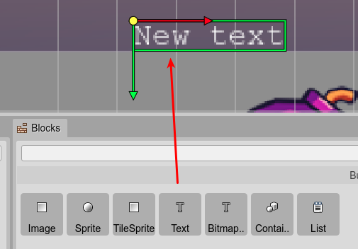
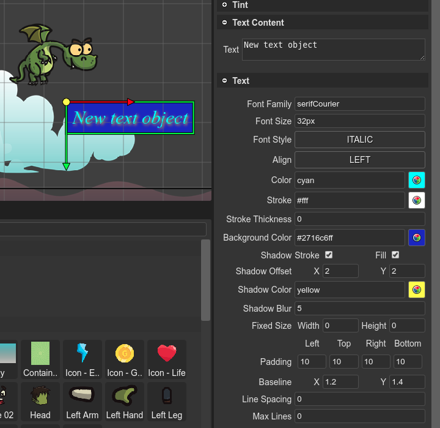

Text objects
The Text type allows to create Text objects based on HTML fonts. It allows customizing the color of the text, the shadows, the stroke, etc…
You can create a Text object by dropping a Text built-in block on the scene.
Also, using the type replacing dialog, you can convert a Bitmap Text (or any other object) into a Text object.
The Text objects are created in code using the text factory. This is how the scene compiler generates that code:
const text_1 = this.add.text(90, 385, "", {});
text_1.text = "New Text object";
text_1.setStyle({
"backgroundColor":"blue",
"color":"orange",
"fontFamily":"serif",
"fontSize":"60px",
"fontStyle":"bold italic",
"stroke":"orange",
"shadow.offsetX":5,
"shadow.offsetY":5,
"shadow.color":"brown",
"shadow.blur":7,
"shadow.stroke":true,
"shadow.fill":true});
text_1.setPadding({"left":10,"top":10,"right":10,"bottom":10});
Text type properties
The Text type contains many of the common object properties:
It also contains the Text property, that is dedicated to all the objects with texts, and its specific properties:
The TextStyle properties.
The TextShadow properties.
The TextPadding properties.
The TextWordWrap properties.
In the Inspector view, hover the mouse in the label of each property to get a tooltip with the Phaser API.